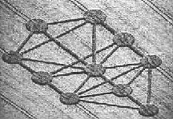
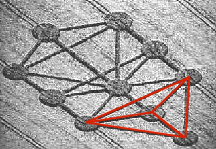
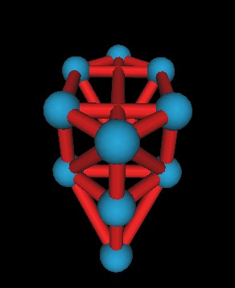
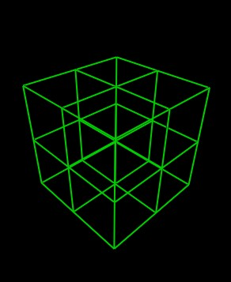
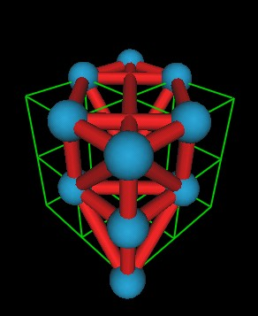
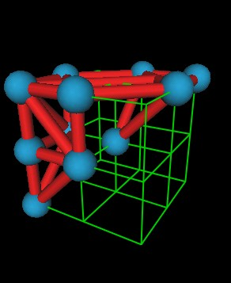

I was reading Linda Moulton Howe's book Mysterious Lights and Crop Circles (a very good book) and saw on page 80 a crop circle in the shape of the "The Kabbalistic Tree of Life".
I had seen this around before, but not being particularly interested in "mystical" things, I hadn't really studied it in any detail.
(I don't have the crop circle image used in the book, but here is one from a different angle to that shown in the book. Sorry, I don't know who took this picture or I would give appropiate credit.)
|  |
What struck me was that the "lower" 4 circles, in my eyes, represented a tetrahedron, a 3 dimensional (3D) polyhedron. This started me thinking that the rest of the Tree of Life may be a 3 dimensional figure.
|  |
Visually, there are other tetrahedra in the Tree of Life, but this is the one that got my attention first.
I constructed the Tree of Life in a 3D computer program I wrote. Here is the result.
|  |
This looks a little funny. Mostly because of the perspective view used by the 3D program I used to create it. So some blue spheres look bigger than other spheres even though they all have the same diameter.
I created this by looking at various orientations of different lattices. I first tried the FCC (Face Centered Cubic) Lattice. Then I tried the SC (Simple Cubic) Lattice. The simple cubic lattice seemed to match very well.
|  |
|  |
Here it is from another point of view.
|  |
There are probably other ways that the Tree of Life can be constructed in 3D.
The way I have shown involves not only the simple cubic lattice (green lines) but also 2 different FCC lattices. This is because some of the red cylinders/edges of the Tree of Life are the face diagonals of the (green) cubes.
Other orientations and lattices are being investigated.
Usage Note: My work is copyrighted. You may use my work but you may not include my work, or parts of it, in any for-profit project without my consent.